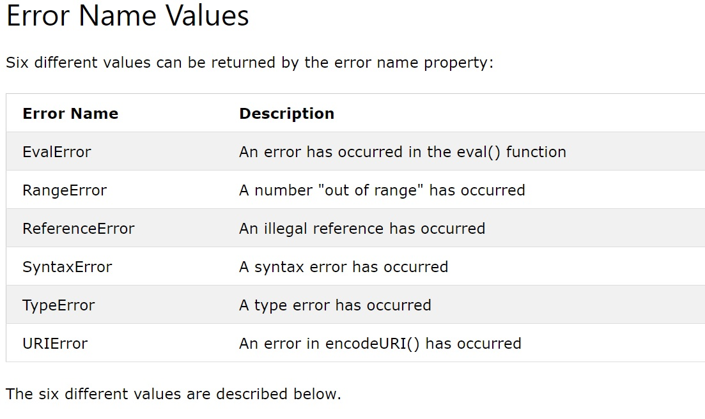

Try statement allows you to define a block of code to be tested for errors while it is being executed.
Catch statement allows you to define a block of code to be executed, if an error occurs in the try block.
Try & Catch come in pairs.
Throw statement allows you to create a custom error.
Technically you can throw an exception (throw an error).
The exception can ba a JavaScript String, a Number, a Boolean or an Object.
Please input a number between 5 and 10:
The finally statement lets you execute code, after try and catch, regardless of the result:
Indicates an error in the eval() function
Newer versions of JS do not throw any EvalError. Use SyntaxError instead.
A RangeError is thrown if you use a number that is outside the range of legal values.
Example: num.toPrecision(500);